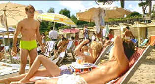

| Talented Mr. Ripley (SE)/B,B+ |
| Paramount/1999/138/ANA 1.85 |
The Talented Mr. Ripley is a remake of the 1965 French film Purple Noon from a novel by Patricia Highsmith (Strangers on a Train). Anthony Minghella (The English Patient), Ripley's director, is an erudite and polished artist. However, there is a coldness that frosts the edges of Minghella's work. It distances the viewer from protagonists, and such is the case with his Ripley.
 |
| It's Ripley, believe it or not. ©Paramount |
Highsmith's
novel is a clever template from which to start and depart.
Ripley is a young musician, hungry for a life beyond his reach.
When circumstances send him on a mission to Italy to bring back
the profligate son of a rich man, Ripley sees other
possibilities. The beaches and rialtos of Europe are a lure he
can't resist. When Ripley arrives in Italy and moves in on
Dickie Greenleaf, the wheels are spinning. He positively leaches
onto Greenleaf and girlfriend Marge Sherwood. There are hints of
what's to come, obvious homoerotic overtones, and in the
sunshine and sand Ripley's plan unfolds.
Matt Damon is skeletal playing Ripley.
He is far too creepy to invest himself into the lives of these
young ancestors of the jet set. It's a major blunder. In the
original Purple Noon, Alain Delon was appealing and there
was good reason that he was able to become attached to
Greenleaf. Do you fault the actor or director. My vote goes to
the director in this case. Jude Law brings confidence and brio
to Dickie Greenleaf. It's an effective screen
portrait, while Gwyneth Paltrow is far too pale and wan
(despite the sun) for my tastes. Add a bit of cheeky American
abroad work from Kate Blanchett and Philip Seymour Hoffman, and
you must admire the cast. The production is sumptuous with great
photography. All the production elements are sterling, but
still, there's the frosty edge that prevents Ripley from
ripping.
Anthony Minghella is an enjoyable guide
for The Talented Mr. Ripley in his audio commentary.
Minghella's craftsmanship flows over into his production
observations. The making of short included as one of the extras
has cast interviews and some behind the scenes insights, but is
limited by intent. A making of the soundtrack short is
informative, with two music videos and two theatrical trailers
completing the package.
Transfer elements for this 1999 film,
are as expected, pristine. The DVD effectively captures the
lighting intent of the cinematographer and director. It appears
that a variety of filters were used to bring a distinctive look
to The Talented Mr. Ripley, and at times the result is a
slightly softer than reference DVD picture. Delicate colors are
replicated and the lush values of the production are shown off
to good effect. Dolby Digital 5:1 surround delivers all the
ambient sounds in the right locations. The music by Gabriel
Yared is given a full range treatment as well.

The Movie Poster Archive include extensive poster images from the films of stars like Susan Hayward, Kirk Douglas, Katharine Hepburn and many more. Our featured star is James Mason

The
Feature
Archive has articles ranging from Akira
Kurosawa to Blonde
Bimbos.

Join the editor and his family on a trip through Roman movie sites in this unusual feature.

 Kinoeye
Archive
Kinoeye
ArchiveThis is a resource of all content-rich materials on the web relating to Central and East European cinema. The ultimate aim of the Kinoeye Archive is to provide a near-as-damn-it definitive index of intelligent and thoughtful English-language analysis of Central and Eastern European cinema on the web.

DVD
Demystified makes it all clear.The official
Internet DVD FAQ for the rec.video.dvd Usenet newsgroups.

The
DVD Answer Man is a new site devoted to spreading
the DVD gospel. Answers to questions, reviews, links and
more....
Movie
Collector's World

The publication you can't do without if your interested in Movie
Posters